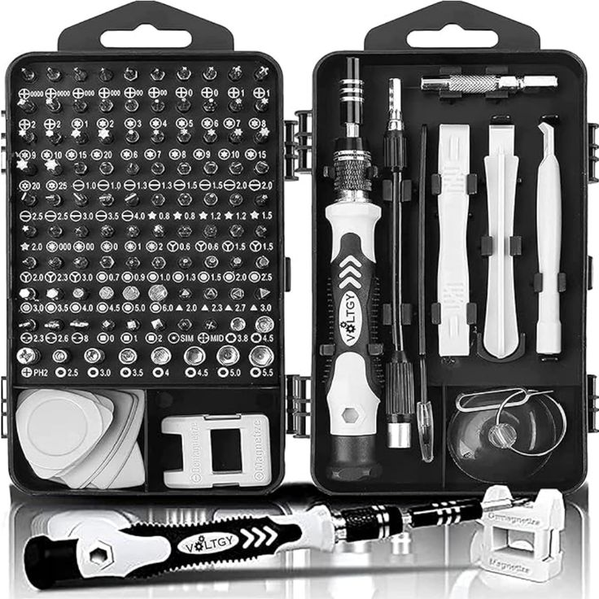
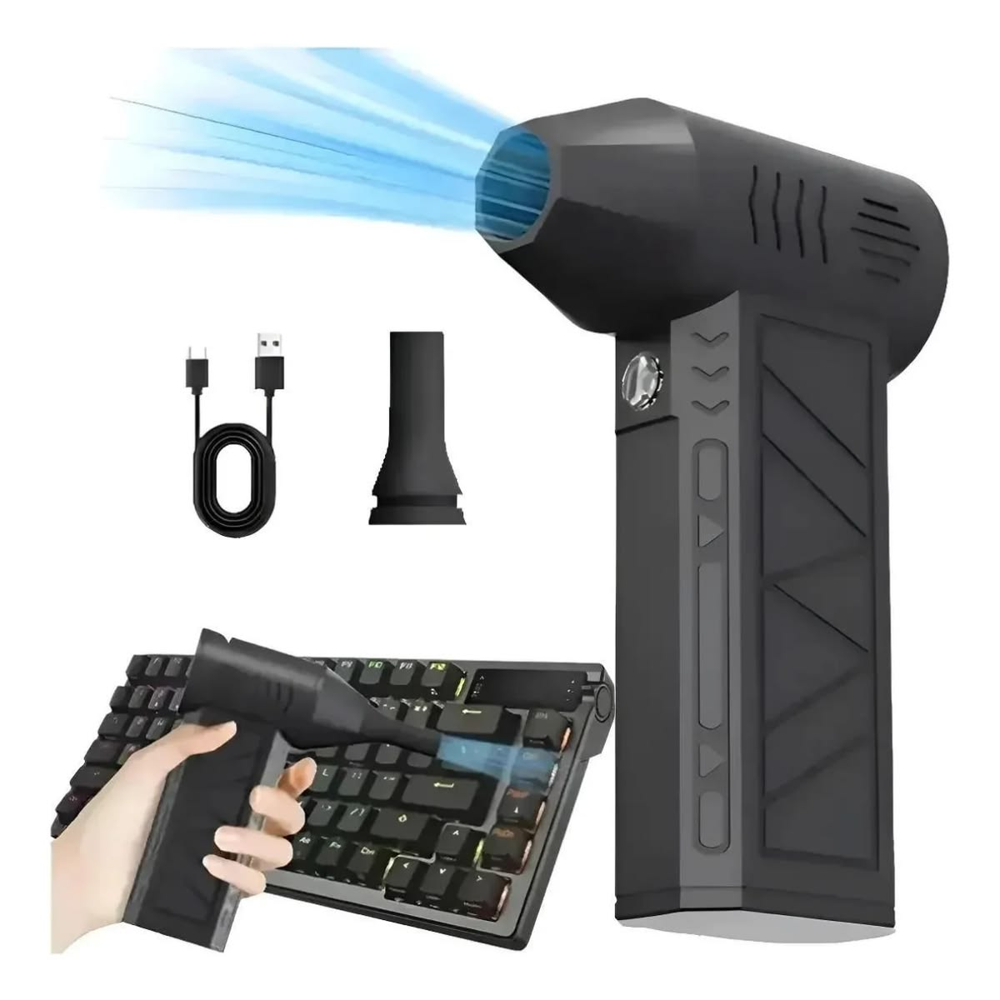
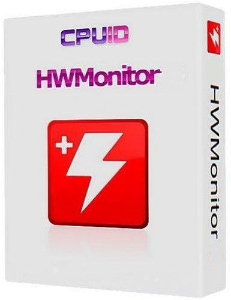
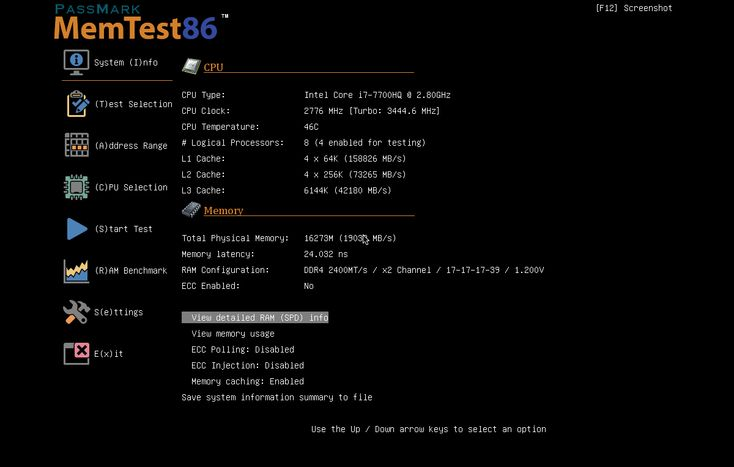

Herramientas de Arquitectura del Computador
Compendio de herramientas fundamentales a nivel de hardware y software empleadas en el diagnóstico, ensamblaje, medición y análisis de sistemas computacionales.
Tabla de Herramientas de Hardware y Software
Cada herramienta incluye su imagen de referencia, nombre, clasificación y aplicación práctica en arquitectura del computador.
| Imagen | Nombre | Clasificación | Aplicación |
|---|---|---|---|
| Pulsera Antiestática | Hardware | Conecta al operador a tierra física para disipar descargas electrostáticas y proteger circuitos integrados, procesadores, memorias RAM y placas base durante la manipulación. | |
| Multímetro Digital | Hardware | Mide voltajes de alimentación (3.3 V, 5 V, 12 V en fuentes ATX), continuidad eléctrica, resistencia y estado de carga de baterías CMOS. | |
 |
Destornilladores de Precisión | Hardware | Permiten el ensamblaje y desmontaje seguro de gabinetes, disipadores, placas madre, unidades de almacenamiento y tornillería delicada sin dañar las cabezas. |
 |
Soplador de Aire / Limpieza Técnica | Hardware | Remueve polvo y partículas acumuladas en ventiladores, aletas de disipación y ranuras de expansión para mantener temperaturas óptimas de operación. |
| CPU-Z | Software | Identifica y muestra información detallada de la CPU (modelo, generación, núcleos, hilos, caché, litografía), tipo de zócalo, placa base y memoria RAM. | |
 |
HWMonitor | Software | Lee en tiempo real los sensores térmicos, voltajes, consumos y velocidades de ventiladores para detectar sobrecalentamientos o fallas de alimentación. |
 |
CrystalDiskInfo | Software | Consulta los atributos S.M.A.R.T., estado de salud, temperatura y horas de uso de discos duros mecánicos (HDD) y unidades de estado sólido (SSD / NVMe). |
 |
MemTest86 | Software | Ejecuta pruebas exhaustivas de lectura/escritura sobre la memoria RAM para detectar celdas defectuosas o errores de direccionamiento que causan inestabilidad. |
💡 Reflexión de Aprendizaje Individual [VAC-SD1 — Actividad 3]
Estudiante: Zambrano Avendaño, Oscar Yván | C.I.: V-31.269.474 | Fecha de publicación: 2026-11-23
Competencia técnica consolidada: Clasifiqué y analicé herramientas de hardware y software aplicadas a la arquitectura del computador, diferenciando la prevención física/eléctrica (pulsera antiestática, multímetro, destornilladores, soplador) del diagnóstico y monitoreo por software (CPU-Z, HWMonitor, CrystalDiskInfo, MemTest86).
Obstáculo encontrado y criterio de resolución: Seleccionar y organizar herramientas representativas sin mezclar funciones de medición eléctrica con utilidades de diagnóstico lógico requiere precisar qué falla resuelve cada recurso; lo abordé agrupando primero el instrumental físico de taller y luego las herramientas de verificación de CPU, sensores, almacenamiento y RAM.
Aplicación profesional en TI: En soporte técnico y mantenimiento preventivo, aplicar esta selección ordenada evita daños por electricidad estática o tornillería inadecuada, acelera el diagnóstico de fallas térmicas o de memoria/almacenamiento y estandariza las intervenciones sobre los equipos.